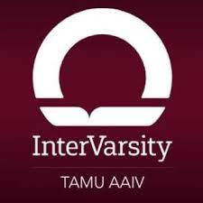

Dancing for a Cause, FUSD, and TAMU Modern
I was and am currently apart of many different dance organizations
since high school. Dancing for a Cause was a dance organization that danced for different
charities such as Alex's Lemon Club and raising thousands of dollars for charity.
Here are some competitive videos of me dancing at World of Dance Dallas 2019 with two teams:
The Alliance
and
Impact N Change
Asian American Intervarsity

I am also currently apart of Asian American Intervarsity, a christian
ministry where we seek to make connections with others through our love for
Christ. Here is their instagram page.